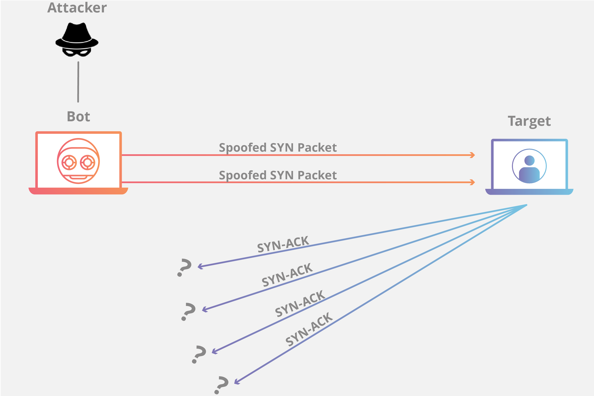
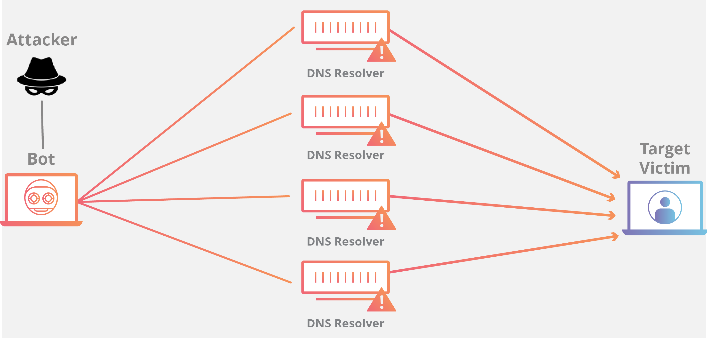

Pengertian DDOS dan Bagaimana Menanggulanginya
2022-07-03 12:38:12Caliph Dev
Author Content Creator
Apa itu DDoS? DDoS merupakan kependekan dari Distributed Denial of Service atau dalam bahasa Indonesia dapat diartikan sebagai Penolakan Layanan secara Terdistribusi. DDoS adalah jenis serangan yang dilakukan dengan cara membanjiri lalu lintas jaringan internet pada server, sistem, atau jaringan. Umumnya serangan ini dilakukan menggunakan beberapa komputer host penyerang sampai dengan komputer target tidak bisa diakses.
DDoS adalah serangan yang sangat populer digunakan oleh hacker. Selain mempunyai banyak jenis, DDoS memiliki konsep yang sangat sederhana, yaitu membuat lalu lintas server berjalan dengan beban yang berat sampai tidak bisa lagi menampung koneksi dari user lain (overload). Salah satu cara dengan mengirimkan request ke server secara terus menerus dengan transaksi data yang besar.
Berhasil atau tidaknya teknik DDoS dipengaruhi oleh kemampuan server menampung seluruh request yang diterima dan juga kinerja firewall saat ada request yang mencurigakan.
Serangan DDoS Terbesar
Percobaan serangan DDoS setiap tahun selalu meningkat. Penggunanya tidak hanya user yang ingin mencari sensasi, bahkan digunakan dengan alasan politik, atau tindak kejahatan yang ingin mengganggu stabilitas server dan bahkan mencuri data yang ada di dalamnya.
Serangan ke Spamhaus pada tahun 2013 tercatat sebagai serangan DDoS terbesar sepanjang sejarah. Serangan ini mencapai puncak tertinggi 400 Gbps dan mengakibatkan Github tidak bisa diakses beberapa menit. Di tahun berikutnya terjadi serangan ke salah satu klien Cloudflare dengan kekuatan 33% lebih besar dibandingkan serangan yang dilakukan ke Spamhaus.
Selain Spamhaus dan Cloudflare, Serangan ke BBC tahun 2015 juga tercatat sebagai serangan DDoS terbesar sepanjang sejarah. Serangan ini mengakibatkan hampir semua layanan BBC lumpuh. Keseluruhan domain tidak bisa diakses, bahkan layanan On-Demand dan radio juga mati.
Github juga menjadi korban serangan serangan DDoS. Pada tahun 2015 bukan menjadi serangan terbesar yang ditujukan ke situs itu. Ternyata, pada tahun 2018 terjadi serangan yang sama dan hampir 3 kali lebih besar dibanding serangan yang terjadi sebelumnya.
Github mendapatkan serangan DDoS yang mencapai puncak tertinggi transaksi data yang sangat fantastis, yaitu 1.35 Tbps. Serangan tersebut berasal dari ribuan Autonomous System (ASN) di puluhan ribu titik akhir yang unik. Cara kerja serangan DDoS adalah melalui penyalahgunaan instance memcached yang memang dapat di akses melalui internet dengan UDP secara publik.
Serangan ke Github awal tahun ini menggunakan DDoS adalah serangan DDOS terbesar sepanjang sejarah yang tercatat saat ini.
Cara Kerja dan Tujuan DDoS
Konsep sederhana DDoS attack adalah membanjiri lalu lintas jaringan dengan banyak data. Konsep Denial of Service bisa dibagi menjadi 3 tipe penggunaan, yakni sebagai berikut :
Request flooding merupakan teknik yang digunakan dengan membanjiri jaringan menggunakan banyak request. Akibatnya, pengguna lain yang terdaftar tidak dapat dilayani.
Traffic flooding merupaka teknik yang digunakan dengan membanjiri lalu lintas jaringan dengan banyak data. Akibatnya, pengguna lain tidak bisa dilayani.
Mengubah sistem konfigurasi atau bahkan merusak komponen dan server juga termasuk tipe denial of service, tetapi cara ini tidak banyak digunakan karena cukup sulit untuk dilakukan.
Sedangkan jika kategorikan berdasarkan layer OSI, ada serangan pada layer aplikasi, protokol, dan volumetrik.
- DDoS Layer Aplikasi

Kategori penyerangan ini adalah mengambil semua sumber daya dari target. Target dari serangan adalah later dimana halaman website dieksekusi pada server dan mengirimkan respon ke HTTP request. Sangat ringan jika hanya melayani satu request. Sedangkan akan menjadi masalah jika melayani banyak request secara bersamaan apalagi jika menjalankan query database juga.
- DDoS Protokol

Serangan ini mengekploitasi TCP dengan cara mengirimkan paket SYN dengan spoof alamat IP dalam jumlah yang besar. Setiap koneksi yang masuk akan ditanggapi oleh server yang menunggu proses koneksi berjalan, namun tidak pernah terjadi. Hal ini akan mengakibatkan proses yang terus berjalan pada server yang dapat menyebabkan overload.
- Volumetrik DDoS
Tujuan dari serangan DDoS ini adalah menghabiskan semua bandwidth yang tersedia antara target dengan jaringan internet. Caranya adalah dengan membuat lalu lintas yang sangat padat, seperti penggunaan botnet.
-----------------
Tidak semua jenis yang dapat kami bahas, masih ada banyak tipe serangan DDoS yang tercatat selama ini, seperti serangan Memcached DDoS, NTPApmlification, DNS Flood, UDP Flood, dan masih banyak lainnya.
Serangan Denial of Service (DoS) pertama kali muncul lpada tahun 1996 yang dikenal dengan serangan SYN Flooding Attach untuk mengeksploitasi kelemahan protokol Transmission Control Protocol (TCP). Sejarahnya DDoSadalah versi awal dari DDoS.
Teknik DDoS
Serangan DDoS adalah teknik penyerangan yang mempunyai banyak cara sederhana, seperti menggunakan virus, botnet, dan perangkat lunak yaitu RailGun.
- Botnet
Pada pengembangannya, serangan DDoS dilakukan dengan bantuan kumpulan bot yang dijalankan secarabersama-sama. Bot disisipkan pada malware yang kemudian di tanam ke komputer yang terhubung ke jaringan internet.
Jumlah komputer ini bisa puluhan sampai dengan jutaan, tergantung banyaknya komputer yang telah terinfeksi malware. Semua komputer ini dinamakan dengan botnet, sedangkan satu komputer yang terinfeksi dinamakan dengan komputer zombie.
Hanya menggunakan satu perintah saja, botnet langsung menjalankan perintah untuk melakukan DDoS ke komputer target dalam waktu bersamaan.
- Virus
Di internet, seseorang yang berencana melakukan DDoS adalah dengan menyebarkan virus melalui file yang dibagikan ke berbagai situs yang terhubung dengan internet. Virus sengaja diciptakan salah satunya adalah untuk menjalankan bot melalui script yang berjalan pada sistem operasi. Bahkan beberapa virus dapat mengambil hak akses dari perangkat yang sudah mengunduh script dan dijalankan pada sistem operasi.
Saat komputer sudah terinfeksi virus DDoS, sebuah virus akan secara aktif melakukan serangan DDoS ke server atau ke alamat IP tertentu yang sudah ditentukan.
Ciri Website Anda Terkena DDoS
- Bandwidth mengalami lalu lintas yang sangat padat secara drastis baik download atau upload. Terjadi tiba – tiba dan berlangsung secara terus menerus. Jika target adalah VPS, bisa jadi konsumsi bandwidth akan mencapai batas penggunaan sehingga VPS tidak bisa diakses.
- Load CPU menjadi sangat tinggi padahal tidak ada proses yang dieksekusi yang mengakibatkan kinerja menjadi menurun sampai dengan website tidak bisa diakses.
- Jika sistem Anda berada pada penyedia layanan VPS, terkadang ada yang menyediakan layanan informasi jika sewaktu-waktu terjadi aktivitas mencurigakan pada server. Anda juga bisa mengaturnya sendiri.
Ada berbagai cara yang bisa Anda lakukan untuk mencegah serangan DDoS yang membuat sistem berhenti bekerja.
- Memperbarui sistem operasi ke versi terbaru. Hal ini bertujuan untuk mengatasi menutupi bagian-bagian rentan yang bisa saja dijadikan pintu masuk akses ilegal.
- Membatasi akses dari dan ke sistem sehingga bisa menyaring trafik data yang masuk dan keluar pada komputer atau server yang Anda gunakan.
- Jika serangan yang terjadi menggunakan Smurf, Anda dapat mencoba mengatasinya dengan cara mematikan sementara broadcast address pada router. Bisa juga dengan melakukan penyaringan atau membatasi permintaan ICMP pada firewall.
- Menggunakan perangkat lunak keamanan tambahan untuk sistem.
Cara Mengatasi DDoS Attack
Ada beberapa cara yang bisa Anda lakukan jika website atau sistem terkena DDoS. Berikut ini beberapa yang bisa Anda coba:
- Melakukan Identifikasi Serangan, biasanya jika Anda mempunyai server sendiri, tanda-tanda jika sedang terjadi serangan DDoS akan terlihat. Jika dikethui maka Anda bisa bersiap-siap melakukan penanganan sebelum terjadi serangan DDoS yang lebih serius.
- Mempertahankan Parameter Network, ada beberapa langkah teknis yang dapat diambil untuk mengurangi sebagian efek dari serangan, dan beberapa diantaranya cukup sederhana. Misalnya anda dapat:
- Memperbesar Bandwidth, jika masih bisa melakukan pelebaran bandwidth, cara ini bisa dicoba untuk memberikan waktu agar sistem tidak sampai down. Jika serangan DDoS terlalu besar maka cara ini mungkin tidak akan berpengaruh banyak untuk penanganan.
- Menghubungi ISP atau penyedia layanan web hosting, salah satu ciri serangan DDoS adalah menyerang alamat ip dari sistem, sehingga Anda bisa melaporkan kejadian tersebut kepada penyedia jasa internet yang dipakai dan mendeteksi serangan yang terjadi.
- Menghubungi Spesialis DDoS, langkah terakhir yang bisa diambil adalah dengan menghubungi layanan spesialis DDoS yang bisa mencoba membantu Anda untuk menangani serangan yang terjadi.
Kesimpulan
DDoS adalah teknik penyerangan pada sistem yang sangat populer digunakan. Selain sederhana, dengan modifikasi strategi, DDoS bisa menjadi teknik yang sangat ampuh untuk meenggantu sistem.
Ada beberapara cara melakukan DDoS seperti menggunakan request flooding dan traffic flooding. Kedua cara ini mempunyai kesamaan yaitu membanjiri lalu lintas jaringan dengan banyak data atau request. Jika berhasil maka pengguna lain akan kesulitan untuk melakukan akses ke sistem dan bisa jadi mengakibatkan sistem rusak dan tidak bisa diakses.
Tetapi ada beberapa cara yang bisa dilakukan untuk mencegah sistem bermasalah saat diserang oleh DDoS. Memperbarui sistem operasi ke versi terbaru adalah cara mencegah DDoS menyerang melalui celah yang ada pada sistem operasi. Selain itu melakukan konfigurasi pada firewall sehingga bisa memblokir akses yang mencurigakan yang bisa terjadi akibat percobaan DDoS.